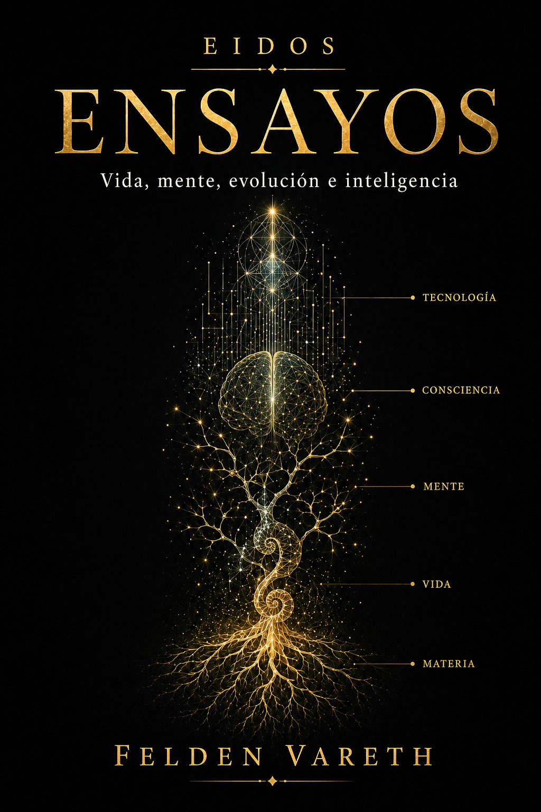

Desde hace tiempo veo en internet vídeos y publicaciones sobre el llamado ajuste fino del universo. Su argumento es que ciertas constantes físicas tienen valores muy precisos: si las fuerzas que mantienen unidos los núcleos atómicos fueran distintas, la materia podría no organizarse como la conocemos; si cambiara la expansión del universo, quizá no llegarían a formarse galaxias ni estrellas. Sin esos elementos y esas estructuras, la vida terrestre no habría podido aparecer. En muchos de esos vídeos se añade entonces una conclusión: alguien tuvo que ajustar las constantes para que existiéramos.
Que nuestra existencia dependa de determinadas condiciones físicas es indudable. Los físicos estudian hasta qué punto esas condiciones son restrictivas. Lo que me llama la atención es el salto desde ese hecho hasta la idea de que el universo fue preparado para producirnos. ¿Y si estamos interpretando las probabilidades desde el único resultado que podemos observar?
Que el universo permita nuestra existencia es un hecho. Que nuestra existencia fuera su objetivo es una interpretación.
Una baraja y un resultado casi imposible
Imaginemos que mezclamos una baraja de cincuenta y dos cartas y las colocamos boca arriba. La probabilidad de obtener exactamente esa combinación era de una entre 52 factorial, aproximadamente una entre 8 × 1067, suponiendo que todos los órdenes fueran igual de probables. Volvamos a barajar: aparecerá otra disposición con la misma improbabilidad. Y otra más si repetimos el experimento.
La combinación concreta era casi imposible de anticipar, pero alguna combinación tenía que salir. Si antes de mezclar hubiéramos escrito el orden exacto y luego hubiéramos acertado, tendríamos una coincidencia que investigar. En cambio, mirar las cartas después y maravillarnos de lo improbable que era esa disposición resulta bastante menos sorprendente.
La diferencia está en cuándo decidimos qué resultado nos importaba. Esto parece una obviedad, hasta que empezamos a aplicarlo a nuestra existencia.
¿Qué posibilidades había de que estuviéramos aquí?
Pienso en mis padres. Si se hubieran conocido otro día, si uno de ellos hubiera tomado una decisión distinta, quizá yo no habría nacido. Lo mismo vale para sus padres, para los anteriores y para una cadena que se remonta a miles de generaciones. No hace falta imaginar grandes catástrofes: un encuentro que no se produce puede cambiar toda la descendencia posterior.
Ahora ampliemos la pregunta a los miles de millones de personas que vivimos actualmente. Para que estemos aquí exactamente los que estamos, con nuestros nombres, familias y biografías, tuvo que darse una sucesión inmensa de acontecimientos concretos. No tenemos una fórmula que permita calcular su probabilidad, pero cuesta imaginar que pudiéramos repetir la historia y obtener la misma población.
Y, sin embargo, aquí estamos. Bastaba con que algunos encuentros y decisiones de nuestros antepasados hubieran sido distintos para que otras personas ocuparan hoy nuestro lugar. Una vez que existimos, es inevitable que nos encontremos en una realidad compatible con nuestra existencia. Solo podemos observar desde una historia en la que hayamos nacido. Eso no cambia las posibilidades que había antes: estamos haciendo la pregunta desde dentro del resultado. Si la historia hubiera sido otra, quizá habría otras personas haciéndose preguntas parecidas.
Que surgiera alguna población humana y que apareciéramos precisamente nosotros son dos cuestiones distintas. Al confundirlas podemos convertir cualquier resultado en un aparente milagro estadístico.
¿Está el universo demasiado bien calibrado?
Con las leyes de la física hay una dificultad que la baraja no resuelve. Algunas modificaciones de las constantes afectarían a la formación de estrellas o a la estabilidad de los elementos. El carbono de nuestros cuerpos se produce en las estrellas gracias a reacciones nucleares que dependen de propiedades muy concretas. Y, si el efecto de la llamada constante cosmológica fuese mucho mayor y positivo, la materia habría tenido dificultades para agruparse y formar galaxias como las nuestras.
Esto es lo que estudian los físicos cuando hablan de ajuste fino. Podemos modificar valores en las ecuaciones y comprobar qué estructuras dejan de formarse. Algunos modelos también exploran qué sucede si varían varias constantes a la vez: pueden aparecer combinaciones que permiten más estructuras de las que parecía al cambiar una sola. Todavía ignoramos por qué las constantes tienen los valores observados, hasta qué punto podrían haber sido diferentes o si algunas están relacionadas por leyes más profundas.
También hay una diferencia entre encontrar un intervalo estrecho de valores y afirmar que era muy improbable obtenerlo. Hay investigadores que intentan calcular esas probabilidades mediante modelos que asignan distintos pesos a los valores posibles. El problema es que todavía no sabemos qué valores podían darse realmente ni qué distribución sería la adecuada. Sin esos supuestos justificados, una cifra sobre la improbabilidad del universo dice menos de lo que parece. No disponemos de ese sorteo cósmico.
Y queda una pregunta aún más difícil: cuando decimos que el universo está ajustado para la vida, ¿nos referimos a la vida que conocemos o a cualquier forma de vida posible? Hasta ahora solo hemos estudiado una, la terrestre. Tal vez muchas variaciones de las leyes impidieran cualquier organización compleja. Quizá otras permitieran estructuras y procesos diferentes de los nuestros. No lo sabemos.
¿Y si hubiera otros observadores?
Imaginemos, solo como ejercicio, un universo con propiedades físicas distintas en el que pudiera surgir alguna clase de observador. Esos seres estudiarían su realidad y encontrarían que las condiciones de las que dependen son muy particulares. Podrían llegar a una conclusión parecida a la nuestra: qué extraordinario que las leyes permitan nuestra existencia; parece que alguien las hubiera preparado para nosotros.
Pero ellos serían producto de aquellas condiciones, del mismo modo que nosotros somos producto de estas. Estarían mirando el resultado desde dentro. Su sorpresa no demostraría que su universo hubiera sido construido pensando en ellos.
El escritor Douglas Adams lo explicó con un charco de agua convencido de que su agujero había sido hecho a su medida: cada curva encajaba perfectamente con su forma. Nosotros sabemos que fue el agua la que se adaptó al hueco. La comparación tiene límites —una vida posible necesita mucha más física que un charco—, pero sirve para reconocer una tentación: atribuir una intención a aquello que simplemente ha permitido nuestra aparición.
Entonces, ¿ajustado para quién?
Poder observar únicamente un universo compatible con nuestra existencia tampoco explica por qué se dieron esas condiciones. Si hubiera un único universo, la pregunta seguiría abierta.
Puede haber un creador, puede existir un multiverso o quizá algún día descubramos que las constantes no podían tener otros valores. Son posibilidades diferentes, y hoy no tenemos una respuesta definitiva. Tampoco necesitamos resolverlas para distinguir entre una condición que hace posible nuestra existencia y un propósito dirigido a producirnos.
Darwin mostró algo parecido en biología, aunque mediante un mecanismo que conocemos mucho mejor: los seres vivos pueden acabar extraordinariamente adaptados a su entorno sin que la evolución haya perseguido un resultado de antemano. El parecido no explica las constantes del universo, pero ayuda a detectar nuestra costumbre de mirar hacia atrás y confundir el resultado con la intención.
Cuando pienso en aquel encuentro entre mis padres, no concluyo que toda la historia anterior estuviera encaminada a que yo naciera. Con el universo me ocurre lo mismo. Una vez aquí, es fácil pensar que todo estaba calibrado para nuestra existencia. Pero nosotros hemos surgido y evolucionado bajo sus leyes. Quizá la facilidad con la que imaginamos que alguien las eligió pensando en nosotros diga más de nuestra psicología, de nuestro antropocentrismo, que de lo que sabemos sobre su origen. Tal vez algún día entendamos por qué el universo tiene estas leyes y no otras. Que nosotros nos regimos por ellas parece bastante evidente.
Referencias para quien quiera profundizar
Luke Barnes — The Fine-Tuning of the Universe for Intelligent Life (2012)
Steven Weinberg — Anthropic Bound on the Cosmological Constant (1987)
Fred C. Adams — The Degree of Fine-Tuning in our Universe—and Others (2019)
Victor J. Stenger — The Fallacy of Fine-Tuning (2011)
Stanford Encyclopedia of Philosophy — Fine-Tuning
Douglas Adams — Conferencia Digital Biota 2 (1998), transcripción
Más allá de este artículo
Novela
EIDOS
Una historia de ciencia ficción sobre consciencia, identidad y la posibilidad de que lo humano continúe más allá del cuerpo.

Ensayos
EIDOS — Ensayos
Una colección de ensayos sobre vida, mente, evolución, consciencia, identidad e inteligencia artificial, en la línea de las preguntas de este blog.
Comentarios